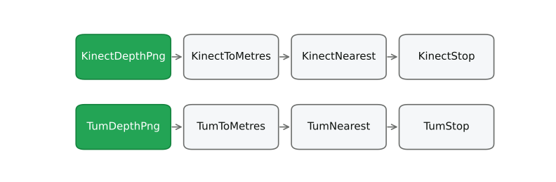
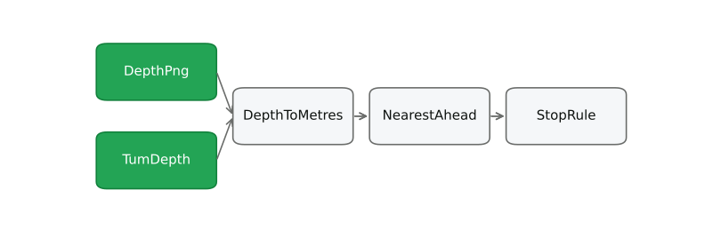

Swap the Reader, Not the Pipeline
Tom Kaltofen, mloda.ai
batch pipelinesemantic layer
offline featureonline feature
index, embeddingstool call
log replay, simon-board

Two real runs, drawn from their traces. Nothing shared.
Copying a pipeline is free now. That is the problem.
One definition. Small readers around it.

The same two runs, one definition, two readers.
Small readers around it, and a receipt for every number.
1200?| Kinect, Azure Kinect, RealSense D435, ROS 16UC1, ScanNet, Redwood | 1.20 m |
| RealSense L515 (same vendor, 0.25 mm units) | 0.30 m |
| TUM RGB-D (5000 per metre) | 0.24 m |
| SUN RGB-D (bits rotated first) | 0.15 m |
| KITTI depth (256 per metre) | 4.69 m |
| ROS 32FC1 (float, metres) | 1.2 km |
| NYU Depth raw (Kinect disparity) | not a distance |
| Depth Anything, MiDaS (relative depth) | no unit at all |